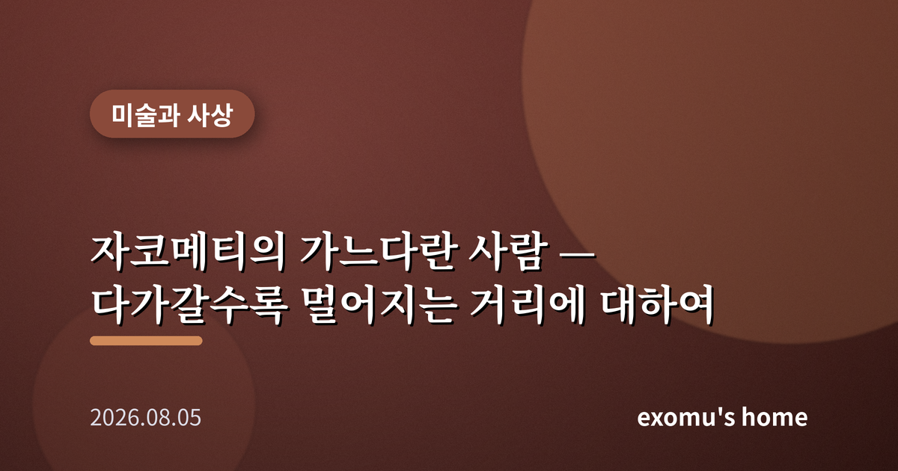
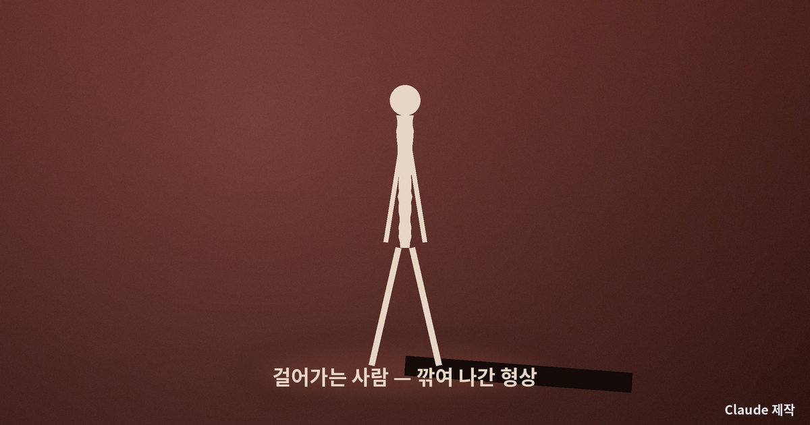
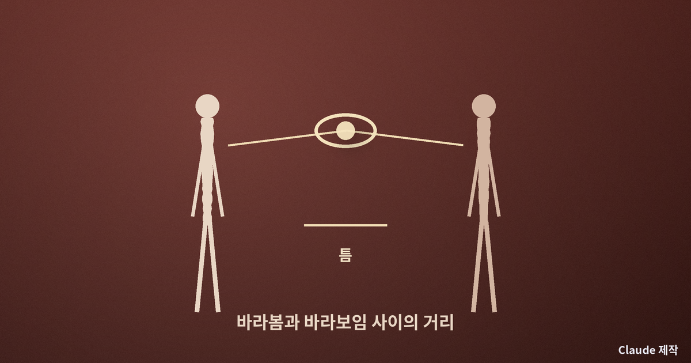
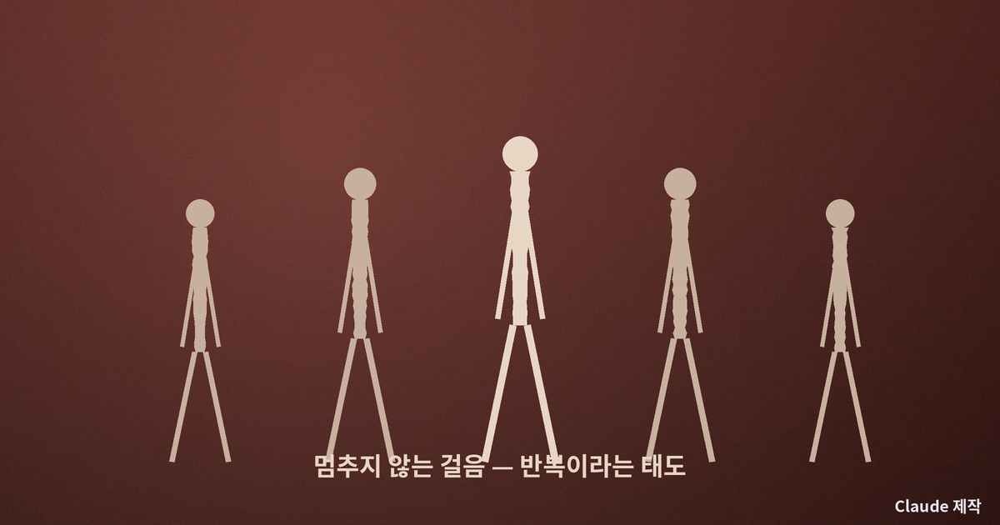
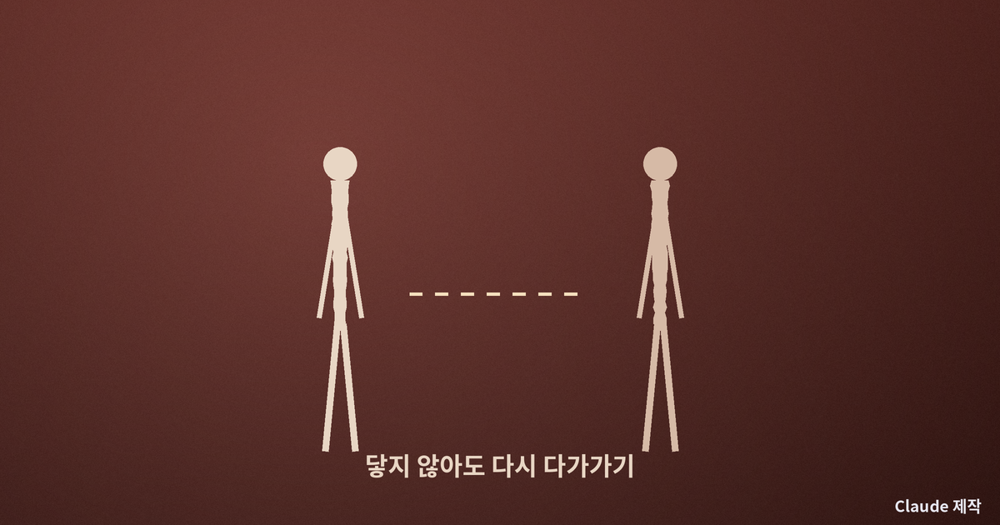

자코메티의 가느다란 사람 — 다가갈수록 멀어지는 거리에 대하여

한 뼘 앞에 있는데도 닿지 않는
미술관에서 알베르토 자코메티의 조각을 처음 마주했을 때, 나는 그 앞에서 이상하게 오래 서 있었다. 뼈만 남은 듯 가느다란 사람이 한 걸음을 내딛고 있었다. 가까이 다가갈수록 그는 오히려 멀어지는 것 같았고, 물러설수록 어렴풋이 사람의 형상이 또렷해졌다. 나는 그때 사람과 사람 사이의 거리라는 것을 눈으로 본 기분이었다. 자코메티의 인물은 왜 그렇게 야위었을까. 나는 그 마름이 게으른 생략이 아니라, 어떤 진실을 향한 깎아냄이라고 생각한다.
깎아낼수록 드러나는 것
자코메티는 하나의 인물을 만들고 또 부수기를 끝없이 반복한 조각가로 유명하다. 살을 붙이면 붙일수록 실제 사람에게서 멀어진다고 느꼈고, 그래서 그는 자꾸만 깎아냈다. 남은 것은 부피가 아니라 존재의 심지 같은 것이었다. 두꺼운 근육과 매끈한 표면 대신, 울퉁불퉁하게 손자국이 남은 가느다란 형상. 그것은 잘생긴 몸을 흉내 내지 않는다. 대신 여기 한 사람이 서 있다는 사실 자체의 무게를 전한다.
나는 이 깎아냄이 우리 삶에도 닿는다고 느낀다. 우리는 흔히 무언가를 더 쌓아야 내가 또렷해진다고 믿는다. 더 많은 경력, 더 많은 관계, 더 많은 소유. 그러나 자코메티는 반대로 말하는 듯하다. 군더더기를 걷어냈을 때 비로소 남는 것, 그 앙상한 심지가 진짜 나에 가깝다고. 마름은 결핍이 아니라 집중이다.

시선과 거리
자코메티의 인물이 유난히 멀게 느껴지는 데에는 이유가 있다. 그는 사람을 늘 일정한 거리 너머에 있는 존재로 보았다. 우리는 타인의 겉모습은 볼 수 있어도 그 속으로는 끝내 들어가지 못한다. 아무리 사랑해도, 아무리 오래 함께해도, 상대의 의식 안쪽은 영영 내 손 밖에 있다. 자코메티의 마른 형상은 바로 그 닿지 않는 거리, 눈앞에 있으나 결코 소유할 수 없는 타인의 아득함을 조각으로 붙잡은 것처럼 보인다.
그와 가까웠던 한 철학자는 시선에 관해 이렇게 생각했다. 내가 누군가를 바라볼 때 그를 하나의 대상으로 붙잡는 것 같지만, 그 사람 역시 나를 바라보는 순간 나는 도리어 그의 시선 아래 놓인 대상이 된다고. 서로를 바라보는 두 사람 사이에는 결코 없어지지 않는 틈이 있다는 것이다. 자코메티의 조각 앞에서 우리가 느끼는 거리감은, 어쩌면 사람과 사람 사이에 원래부터 존재하던 그 틈을 눈으로 확인하는 경험이다.

실패를 계속하는 일
자코메티는 자신의 작업을 늘 실패라고 불렀다. 눈에 보이는 사람을 있는 그대로 옮기는 일이 불가능하다는 것을 알면서도, 그는 매일 다시 시작했다. 완성이 목표가 아니라, 조금 더 진실에 가까워지려는 시도 자체가 그의 삶이었다. 나는 이 태도가 그의 조각보다 더 오래 마음에 남는다. 끝내 닿지 못할 것을 알면서도 오늘 한 번 더 손을 대는 사람. 그것은 예술가만의 이야기가 아니라, 무언가를 사랑하며 사는 모든 사람의 이야기다.
우리는 완벽하게 이해받기를 바라지만 그런 일은 일어나지 않는다. 그럼에도 우리는 다시 편지를 쓰고, 다시 말을 건네고, 다시 손을 내민다. 닿지 않는 거리를 알면서도 한 걸음을 내딛는 그 반복이, 자코메티의 걸어가는 사람이 영원히 멈추지 않는 이유와 닮았다.

다시 나의 삶으로
미술관을 나서며 나는 곁에 있는 사람들을 다르게 보게 되었다. 가장 가까운 이조차 끝내 다 알 수 없다는 사실은 쓸쓸하지만, 동시에 그것은 상대를 함부로 다 안다고 단정하지 않게 만드는 겸손의 근거이기도 하다. 다 알 수 없기에 우리는 계속 물어야 하고, 다 소유할 수 없기에 매일 다시 다가가야 한다. 자코메티의 마른 사람은 그 영원한 거리 앞에서도 걸음을 멈추지 않는다.

나는 오늘, 다 이해했다고 믿었던 사람에게 한 번 더 안부를 묻기로 한다. 닿지 않는 거리를 좁히려는 그 작은 걸음이야말로, 어쩌면 우리가 사람에게 할 수 있는 가장 정직한 예술인지도 모른다.